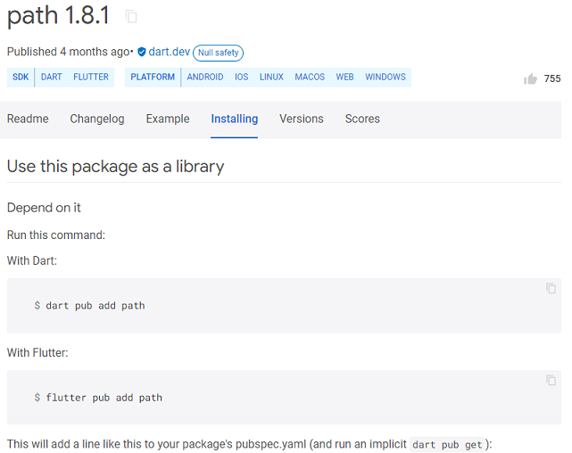

Flutter依據資料儲存位置可分為本地端資料儲存與雲端資料儲存，本地端資料儲存涵蓋鍵/值、資料庫(SQLite)，雲端資料儲存將介紹HTTP-PHP-MySQL、Google Firebase Cloud Storage。
儲存少量、簡單、比較不重要資料可使用鍵/值方式儲存資料，Flutter鍵/值儲存操作如下：
套件安裝：請安裝如下圖shared_preferences套件。可儲存資料類型包含：int、double、bool、String、List<String>。
完整程式如下：
import 'package:flutter/material.dart';
import 'package:shared_preferences/shared_preferences.dart';
void main() {
runApp(const MyApp());
}
class MyApp extends StatelessWidget {
const MyApp({Key? key}) : super(key: key);
@override
Widget build(BuildContext context) {
return MaterialApp(
title: 'Flutter Demo',
theme: ThemeData(
primarySwatch: Colors.blue,
),
home: const MyHomePage(),
);
}
}
class MyHomePage extends StatefulWidget {
const MyHomePage({Key? key}) : super(key: key);
@override
State<MyHomePage> createState() => _MyHomePageState();
}
class _MyHomePageState extends State<MyHomePage> {
TextEditingController _textCtrl1=TextEditingController();
TextEditingController _textCtrl2=TextEditingController();
late SharedPreferences prefs;
Future<void> initSharedPref() async {
prefs = await SharedPreferences.getInstance(); //建立SharedPreferences物件
}
@override
void initState() {
super.initState();
initSharedPref();
}
@override
Widget build(BuildContext context) {
return Scaffold(
appBar: AppBar(
title: Text("shared_preferences套件測試"),
),
body: Padding(
padding: EdgeInsets.all(16.0),
child:Column(
children:[
Text("請輸入儲存鍵值(Key):",style:TextStyle(fontSize: 24)),
TextField(
controller: _textCtrl1,
decoration: InputDecoration(
border: OutlineInputBorder(),
hintText: '輸入Key',
),
),
Text("請輸入儲存值(Value):",style:TextStyle(fontSize: 24)),
TextField(
controller: _textCtrl2,
decoration: InputDecoration(
border: OutlineInputBorder(),
hintText: '輸入Value',
),
),
Row(
children:[
TextButton(
onPressed: ()async{
await prefs.setString(_textCtrl1.text, _textCtrl2.text);
},
child: Text("儲存",style:TextStyle(fontSize: 20)),
),
TextButton(
onPressed: ()async{
String? str=await prefs.getString(_textCtrl1.text);
if (str!=null)
_textCtrl2.text=str;
},
child: Text("取得",style:TextStyle(fontSize: 20)))
]
)
]
)
)
);
}
}
不同於先前鍵/值資料儲存，當使用者需要大量資料操作時，比較好的方式是透過資料庫，SQLite為一輕量化資料庫管理系統同時支援不同平台，要使用SQLite，使用者需安裝sqflite與path套件。

APP使用SQLite紀錄簡化小麥麥分店資料，資料庫名稱mac.db、分店資料表包含branches(分店)，資料表定義如下：
id 編號 自動編號
cname 城市 TEXT
bname 分店名稱 TEXT
address 地址 TEXT
lat 緯度 REAL
lon 經度 REAL
將程式main.dart中匯入sqflite.dart、path.dart模組。
import 'package:sqflite/sqflite.dart';
import 'package:path/path.dart';
將程式main()中加入WidgetsFlutterBinding.ensureInitialized();，目的是避免因Flutter更新而產生錯誤。
void main() {
//避免因Flutter更新而產生錯誤
WidgetsFlutterBinding.ensureInitialized();
runApp(const MyApp());
}
@override
void initState() {
super.initState();
openDB();
}
Future<void> openDB(String dbName) async {
//當db為null時執行openDatabase
db??=await openDatabase(
join(await getDatabasesPath(), dbName),
onCreate: (db, version) {
// Run the CREATE TABLE statement on the database.
return db.execute(
'CREATE TABLE IF NOT EXISTS branches (id INTEGER PRIMARY KEY AUTOINCREMENT,cname TEXT,bname TEXT,address TEXT,lat TEXT,lon TEXT)',
);
},
version: 1,
);
}
Future<void> insertTable(String tableName,Map<String,dynamic> data) async {
await openDB('mac.db'); //確認已開啟資料庫
await db?.insert('branches',{'cname':'Tainan','bname':'a','address':'qqq','lat':'1.2','lon':'2.2'});
//await db?.insert(tableName,data); //新增資料
}
Future<List<Map<String,dynamic>>> queryTable(String tableName,bool distinct,List<String> columns,String where,List whereargs,String orderby) async {
await openDB('mac.db'); //確認已開啟資料庫
return await db?.query(tableName) as List<Map<String,dynamic>>;
}
資料新增：資料新增insert語法如下物件：
語法:
insert(資料表名稱,資料物件,conflictAlgorithm: ConflictAlgorithm.replace)
insert('cities',{'name':'臺南市'},conflictAlgorithm: ConflictAlgorithm.replace)
資料查詢：資料查詢query語法如下物件：
語法:
Future<List<Map<String, Object?>>> query(
String table,
{bool? distinct,
List<String>? columns,
String? where,
List<Object?>? whereArgs,
String? groupBy,
String? having,
String? orderBy,
int? limit,
int? offset}
)
List<Map> maps = await db.query(tableTodo,
columns: ['columnId', 'columnDone', 'columnTitle'],
where: 'columnId = ?',
whereArgs: [id]);
final List<Map<String, dynamic>> maps = await db.query('cities');
return List.generate(maps.length, (i) {
return Cities(
id: maps[i]['id'],
name: maps[i]['name'],
);
});
資料更新：資料更新update語法如下物件：
語法:
Future<int> update(
String table,
Map<String, Object?> values,
{String? where,
List<Object?>? whereArgs,
ConflictAlgorithm? conflictAlgorithm}
)
await db.update(
'cities',
{'name':'高雄市'},
where: 'id = ?',
whereArgs: [1],
);
資料刪除：資料刪除delete語法如下物件：
語法:
Future<int> delete(
String table,
{String? where,
List<Object?>? whereArgs}
)
await db.delete(
'cities',
where: 'id = ?',
whereArgs: [1],
);
不同於先前本地端儲存，使用者利用HTTP套件並搭配後端APACHE/PHP/MySQL來進行資料存取，執行步驟如下：
//資料以表單物件方式傳送
var url = Uri.parse('https://example.com/whatsit/create');
var response = await http.post(url, body: {'name': 'doodle', 'color': 'blue'});
print('Response status: ${response.statusCode}');
print('Response body: ${response.body}');
//當資料以JSON方式傳送(Flutter端)
http.post(
Uri.parse('https://jsonplaceholder.typicode.com/albums'),
headers: {
'Content-Type': 'application/json; charset=UTF-8',
},
body: jsonEncode({
'title': title,
}),
);
//PHP端
<?php
header("Access-Control-Allow-Origin: *");
header("Access-Control-Allow-Headers: Access-Control-Allow-Origin, Accept");
$json = file_get_contents('php://input');
$obj = json_decode($json, true);
...
echo json_encode(PHP_PDO查詢資料);
?>